Generic table tools
This set of tools allows you to perform operations on data. These operations are applied to the data already loaded in TAPIS. These tools can also be used with STA data, but you must take into account that from this point you cannot send another request to the STA service and the data will become table-based data.
The operations are applied manually (implemented in the TAPIS code) without sending external requests. You may find some tools that are similar to the STA tools, but in this case the operations are applied to data that has already been loaded.
With these tools you can select, filter, and edit data, create new columns, group data, and perform other operations.
 View
Table
View
Table
Setting Up the Node:

How to Use the Node:
View Table shows you the data as a table. Dougle-lewft click on the node display a dialog with all the data loaded in the node (as table showed below in the TAPIS). This is only a visualization tool.
Below you can see some examples:
Example 1:
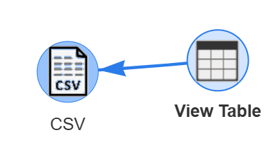
And its visualization:

Example 2:

And its visualization:
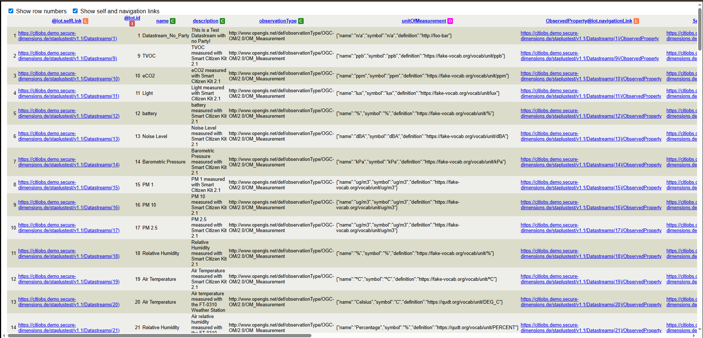
Recipes where this tool is used:
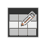
Edit recordSetting Up the Node:

How to Use the Node:
The Edit Record tool allows you to edit, delete, or insert records (by creating new ones).
Original data:
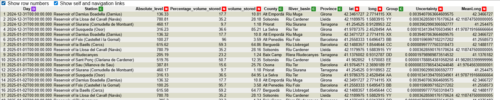
When you double left-click on the node, a dialog like the one shown below is displayed. The same dialog allows you to perform all three actions, depending on the button you click you will do an action or another. In the dialog, you will find all the attributes and their values which all are editable. You can navigate between records using the bottom arrows. You can also enter the record number in the bottom field and click outside to load that record.
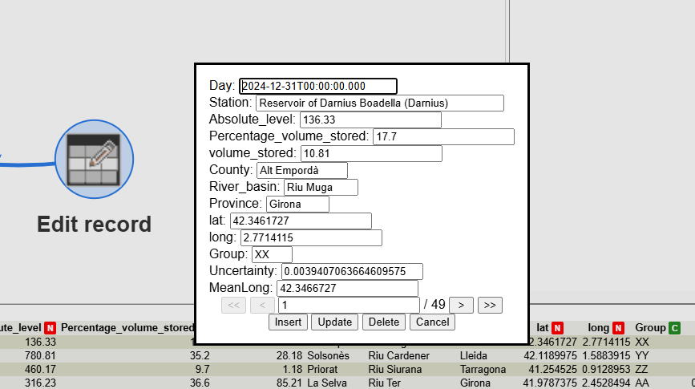
An example of each action is shown below.
Edit (Update button)
To edit a record, modify the information on the fields you want to change and then click the Update button to apply the changes. The changes will be applied immediately. When you have finished, click Cancel to close the dialog.

Result:

Delete
To delete a record, locate it using the bottom arrows or by entering the record number, and then click the Delete button. When you have finished, click Cancel to close the dialog.
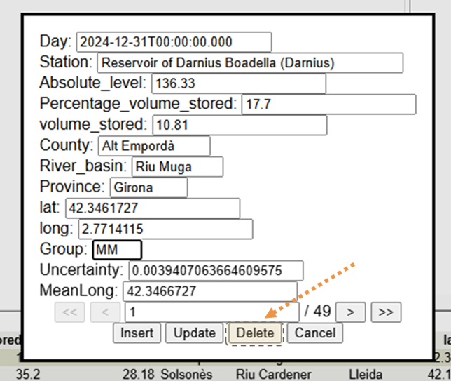
Result:
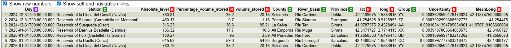
Insert
A new record will be inserted after the current one. Use this record to enter all the values for the new record, and then click Insert. The insertion will be applied immediately.

Result:

Recipes where this tool is used:
Column meaning
Setting Up the Node:
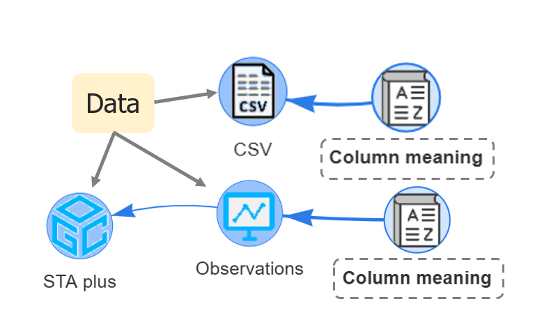
How to Use the Node:
Column meaning tool shows the properties of the attributes. Every attribute (column) has its own properties that you can edit and save. This tool can be used with any kind of data. Some internet services, such as STA, have some properties prefilled, such as the definition (URI), this is the case in the example below.

These are the properties:
Name: Name of the attribute (column).
Predefined options: It is a dropdown with some options that, when selected, automatically complete some fields of the remaining properties.
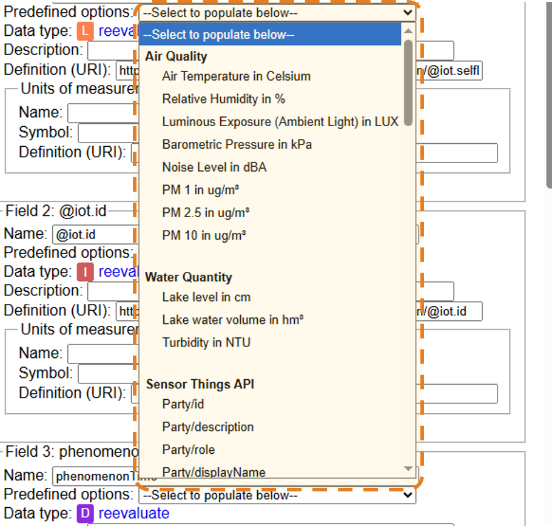
In the example below, if you select PM 2.5 in ug/m 3, all fields will be completed immediately. For example, if you choose an option from the SensorsThings API, only the URL will be completed.
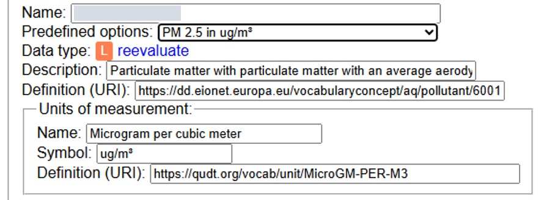
Data type: Indicates the type of the data. It is possible that your data comes from an internet service and this type is predefined, but incorrectly. You can click Reevaluate, and the TAPIS code will assign the type predefined in TAPIS for this kind of data. Each character represents a type:
| B Boolean | A Array | N Null | O Object |
| G Geometry | U Undefined | I Integer | N Number |
| D Isodatetime | L AnyURI | C String |
Description: Description of the attribute.
Definition (URI): URL with the description of the attribute. It is better to use standard websites.
Units of Measurement: The units of the attribute. Not all attributes have units. You can specify the name of the unit, its symbol, and, as before, the definition (URI) that describes it.
Share button:
With Ok button you can
Recipes where this tool is used:
Select Columns
Setting Up the Node:

How to Use the Node:
The Select Columns tool allows you to generate a new table containing only the selected columns from the displayed dialog. After applying this tool, if you want to restore these columns (attributes), it is not possible directly; however, you can return to the previous node and proceed from there.
This example shows the original data with all columns:
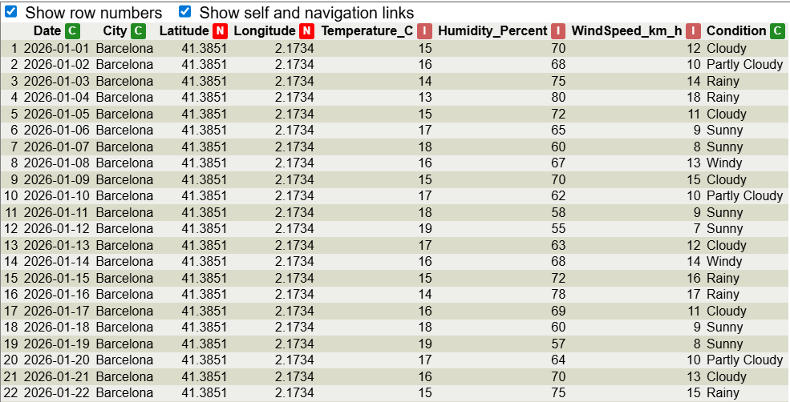
To display the dialog, double left-click on the node. Below you can see the dialog, which displays all the columns in your dataset. Deselect the columns that you do not want to include in the new table, leaving only those you want to keep selected. After making your selection, press the OK button to apply it.
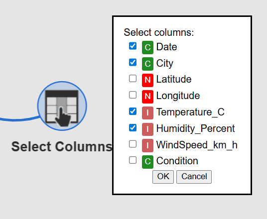
This is the result: a new table containing only the selected columns.

Recipes where this tool is used:
 Select Row
Select Row
Setting Up the Node:
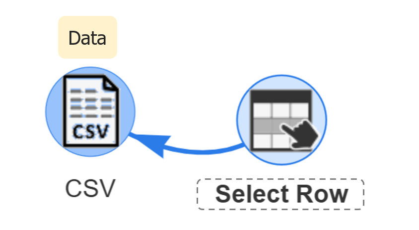
How to Use the Node:
Select Resource tool generates a new table containing only the a record selected in the dialog.
This example contains all the original rows:

To display the dialog, double left-click on the node. Below you can see the dialog displayed, showing all the rows from your data. Select the record you want to keep (using the radio button on the left) and press the OK button, located at the bottom of the dialog.

This is the result: a new table containing only the selected record.

Recipes where this tool is used:
- Recipe 5: Selecting temperatures from an area
- Recipe 5: Selecting temperatures from an area
- Recipe 7: Connecting to a data catalogue and giving user feedback about a dataset
- Recipe 8: Connecting to a S3 service and retreive and view a CSV file in a S3 bucket
- Recipe 12: Determining data quality of a sequence of observations from a Geopackage equivalent to a STA
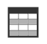
Filter RowsSetting Up the Node:
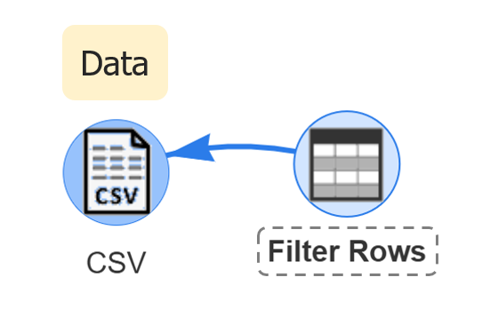
How to Use the Node:
Filter Rows tool for tables allows you to filter your data using one or more parameters, using combined queries. This tool works with TAPIS code. You can use this tool with any kind of data, but remember that the filter will be applied only to the data already loaded in TAPIS. If you are using data from an internet API, you may break the request.
Here is an example with data from a CSV file.
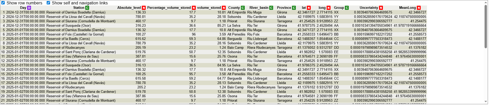
To display the dialog, double left-click on the node. This is the general view when it is displayed. The main function of this dialog is to create conditions linked with logical operators. Each "line" of dropdowns represents a single condition, and each box is a set of conditions connected by a logical operator. You can organize the conditions however you like by adding new conditions or creating additional groups.
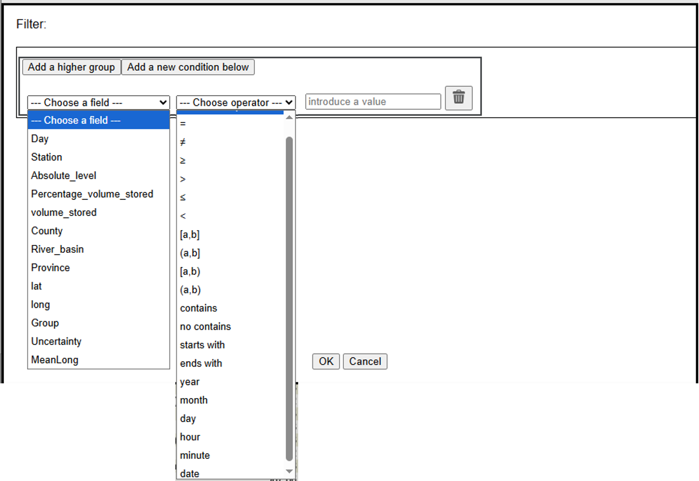
Here is the description of the different parts:
Choose a field: In this dropdown, all the attributes (columns) of your data will appear. Select the one you want.
Choose an operator: In this dropdown you have to choose the operator for your condition. You can use different operators depending on the type of the selected attribute:
| Type | Operators | Meaning |
|---|---|---|
| Numeric operators | =, ≠, ≥, >, ≤, < |
= : equals ≠ : not equal ≥ : greater than or equal > : greater than ≤ : less than or equal < : less than |
| Interval operators | [a,b], (a,b], [a,b), (a,b) |
[a,b] : a ≤ x ≤ b (a,b] : a < x ≤ b [a,b) : a ≤ x < b (a,b) : a < x < b |
| Text operators | contains, does not contain, starts with, ends with |
contains : text includes the value does not contain : text does not include the value starts with : text begins with the value ends with : text ends with the value |
| Temporal operators | year, month, day, hour, minute, date |
year : extract the year month : extract the month day : extract the day hour : extract the hour minute : extract the minute date : extract the date |
Be careful when using interval operators or < , > with dates, as this process may need internal adjustments (we are working on it).
Selecting an interval operator will display an additional field where you can enter both limits.
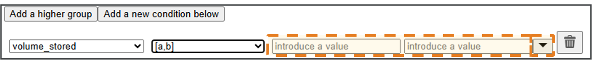
If you click the arrow on the right and you have a field selected, a dropdown with the possible values will appear. You can also type the value manually if you prefer. Press the OK button after selecting a value to populate the field.
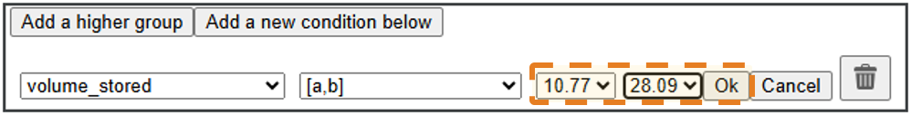
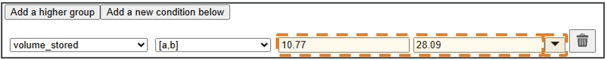
Introduce a value (last field): Enter a value manually or, if you have a field selected, you can choose a value from a dropdown. To display the dropdown, click the arrow on the right (as explained above), select the value, and press the OK button to automatically populate the field.
Add a new condition below: By clicking Add a new condition below, a new "line" (condition) is added to the box. When you have more than one condition per box, a logical operator dropdown appears on the right. In this dropdown, you can choose between And, Or or Not. If you want to delete a condition, click on the trash button.
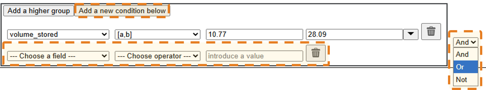
In the example below, you request data where volume_stored is between 10.77 and 28.09 (both included) and the Province is equal to Girona.
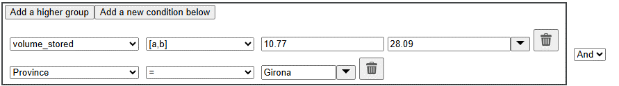
This is the result after applying the filter.
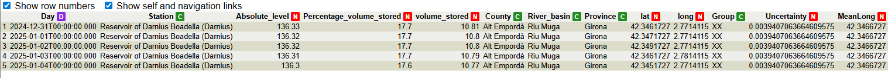
Add a higher group: By clicking Add a higher group, a new "box" with a condition and a logical operator will appear. This new box works the same as the previous one. You can add new conditions with new logical operators.
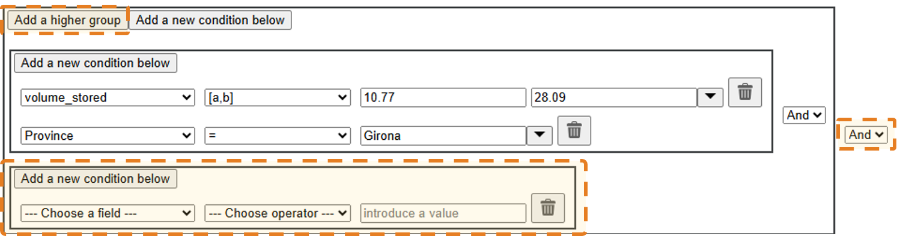
In this example, we use the same filter as before, but with an addition: data where the Province is Barcelona will also pass the filter (because the logical operator used is OR).
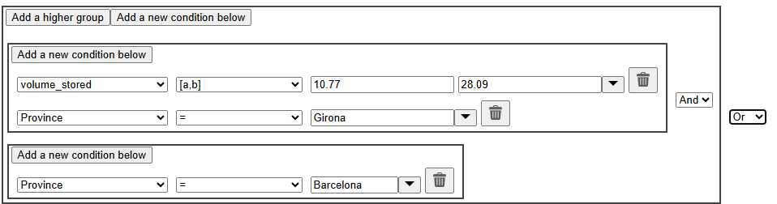
This is the result after applying the filter.
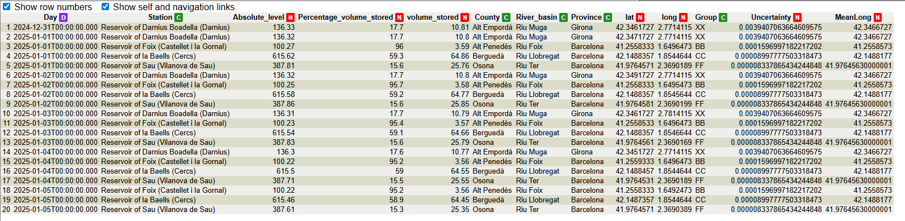
Recipes where this tool is used:
No one yet
 Replace
Replace
Setting Up the Node:
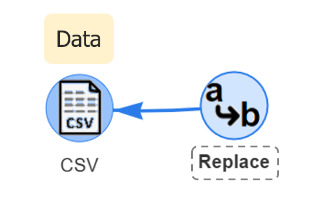
How to Use the Node:
Replace tool allows you to completely or partially replace a word, number, or value. You can apply the replacement to all data or to a specific column. You can replace any kind of data from any type of node. If you want to replace something from an internet request, remember that from this point on, the table will no longer request data from the source. Complete the dialog with your options and click Apply to apply the changes.
This is the CSV table used for the example:
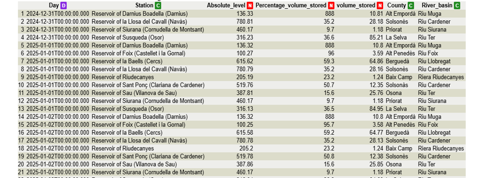
To display the dialog, double left-click on the node. This is how the dialog looks:
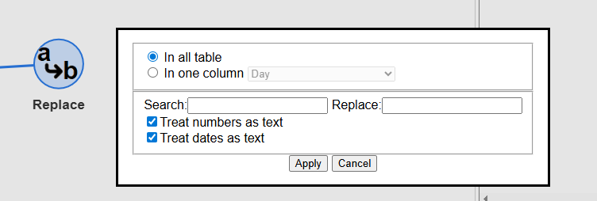
Entire table: If you choose this option, the replacement will be applied to all data in the table.
Single column: If you choose this option, the replacement will be applied only to the selected column from the dropdown.
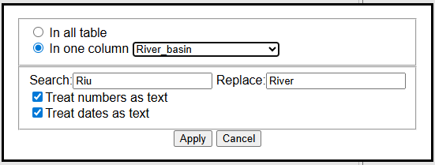
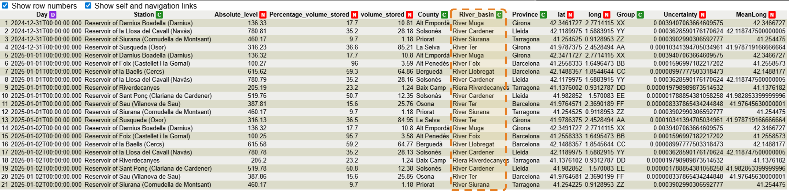
Search and Replace: Enter the text or value to search for in the Search field and the text or value to use as a replacement in the Replace field.
Treat numbers as text: If you check this checkbox, numbers will be treated as text. This means you can partially replace a number. For example, if you enter 23 in the search field, both 23 and 230 will be matched. If you do not treat numbers as text, the entire number must match, so only 23 will be replaced.
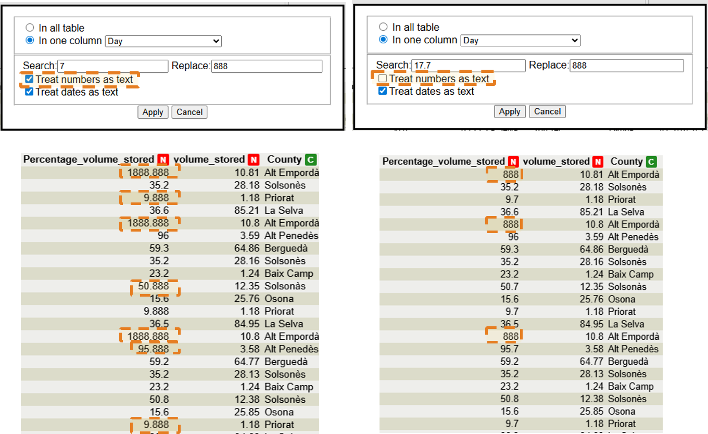
Treat dates as text: If you check this checkbox, dates will be treated as text.
This
means you can
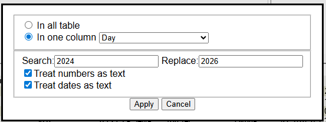
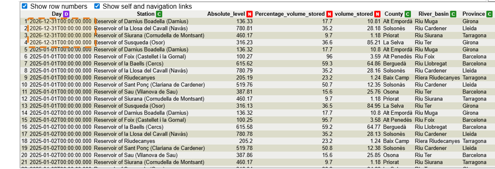
Recipes where this tool is used:
No one yet
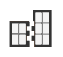
Join tablesSetting Up the Node:
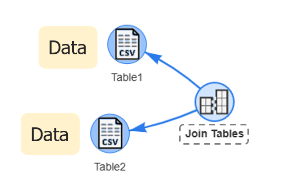
How to Use the Node:
The Join Tables tool allows you to merge two tables. This tool can be used with any type of data. The only requirement is that the two tables have at least one corresponding column, containing matching values, regardless of whether the column names are the same.
To perform the join, the tool must be connected to two nodes containing data.
Different types of joins are supported. You can create a table containing only the matching records (Discard), append the matching data from the second table to the first table (Add records of 1st table), or combine both tables into a single result (Add records from both tables).
If both tables contain columns with the same name (other than the join key), the column from the second table will be automatically renamed by appending _table2 to its name. This suffix can later be changed using the Column Meaning tool.
Theses are the tables used in this example:
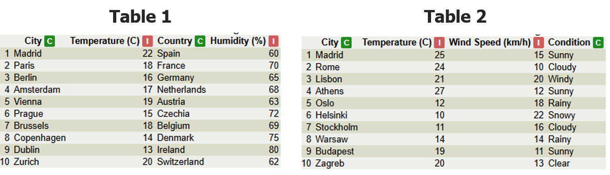
To display the dialog, double left-click on the node.
This dialog is divided into two sections.
In the upper section (Row Matching Fields), you select the pair(s) of columns that will be used to match records between the two tables. A join can be performed using one or multiple pairs of matching columns, allowing more precise record matching.
The lower section defines the type of join and the resulting output table:
- Discard: Creates a new table containing only the records that have matching values in both tables (inner join).
- Add records of 1st table: Keeps all records from the first table and appends the matching columns from the second table whenever a match is found (left join).
- Join all records: Combines all records from both tables, including those without a matching counterpart (full outer join).
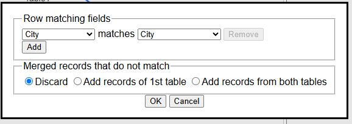
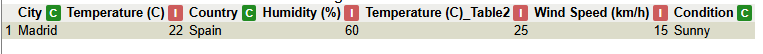
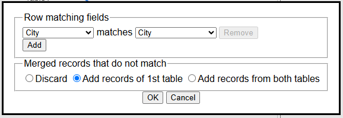
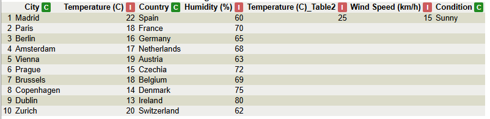
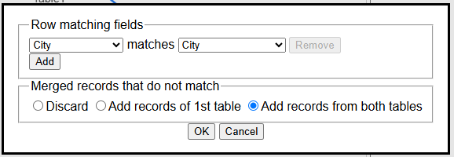
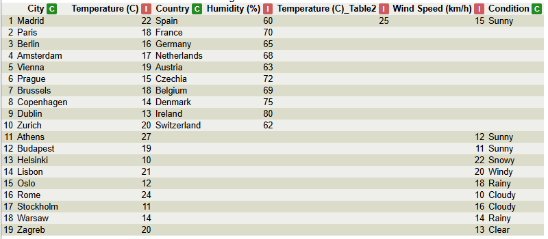
Recipes where this tool is used:
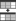
Concatenate tablesSetting Up the Node:
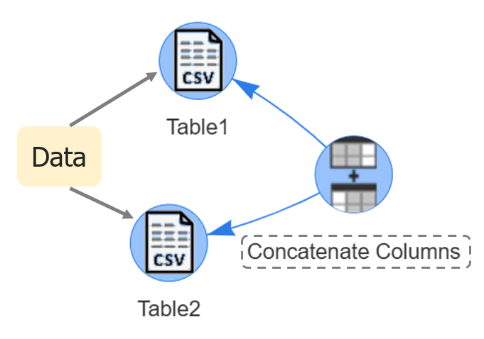
How to Use the Node:
Concatenate columns: This tool returns a table that combines the linked tables. It is possible to combine more than two tables. The data from these tables is combined by stacking the rows vertically. Any kind of data is accepted.
These are the tables used in the example:
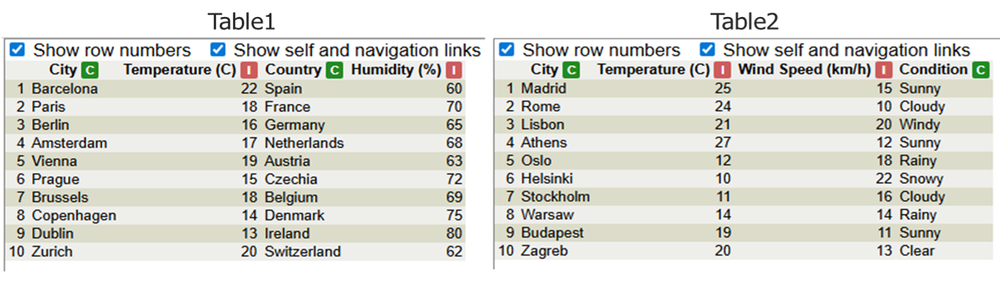
To display the dialog, double left-click on the node. In this dialog, you have only two options to choose from:
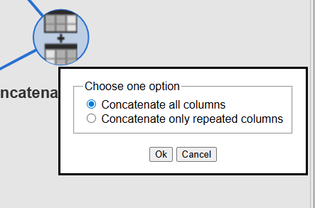
Concatenate all columns: With this option selected, all data from the tables will be combined to form a new table. Columns present in only one table will keep their data, and the missing cells in the other tables will stay empty
Example:
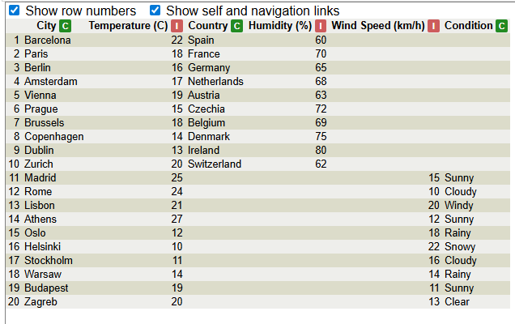
Concatenate only repeated columns: With this option selected, only columns that appear in more than one table will be included in the new table. Columns that exist in only one table will be discarded.
Example:
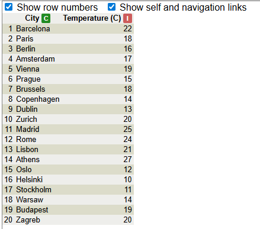
Recipes where this tool is used:
No one yet
 Group by
Group by
Setting Up the Node:
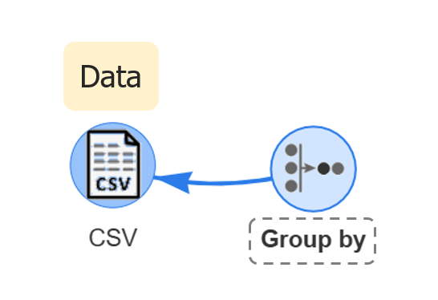
How to Use the Node:
Group by tool allows you to aggregate data based on one or more columns with the same values. You can also aggregate by time. The result of this aggregation is a set of summary statistics, such as mean, mode, sum, or any other values you select. You can aggregate any type of data; columns will include values if the selected statistic is applicable, or remain empty otherwise.
This is the table use in this example:
To display de dialog double left-click on the node. Dialog is divided in four parts that will be explained below
GroupBy: Check the boxes for the columns you want to group by. In other words, values in these columns must be the same to combine the data into a set. You can select more than one
Attributes to aggregate: which columns you want to use to obtain the values to perform the statistics. The selected statistics will appear next to each column name.
GroupBy date rounding: This option lets you aggregate your data by time intervals. You need to select a column with date values.
Aggregations: Select the statistical functions you want to apply. You can choose as many as you need.
Here there is an example, grouping by the column Province, aggregating the values of Absolute_level and Percentage_volume_stored separately and asking for their Mean, Min and Max values.
Recipes where this tool is used:
 Sort by
Sort by
Setting Up the Node:

How to Use the Node:
Sort By tool allows you to sort data by an attribute (column). This action will be performed with TAPIS code.
This example shows data sorted as follows:

To display the dialog, double left-click on the node. Below you can see the dialog, which includes all the columns from your data. Select one column to use as the reference for sorting. You can also choose whether to sort the data in ascending or descending order. After selecting your preferences, click the OK button to apply the changes.
This is the resulting data. In this case, you can see that the data is sorted by the River_basin attribute. Unlike Sort by STA, all records remain the same as the originally loaded data, but are sorted differently.

Recipes where this tool is used:
No one yet
Aggregate Columns
Setting Up the Node:
How to Use the Node:
Aggregate Columns tool creates new columns in your table by existing columns using statistics. It can be used with any type of data, depending on which statistic you choose.
This is the table for the example. It comes from a JSON document.
To display the dialog, double left-click on the node. Here you can find the dialog and below you can find the description of the following parts. The general functionality is to select the options you want for the new column, add it to the table, and then press the OK button to create the new columns.
Select attributes: Check the checkboxes of the attributes (columns) you want to aggregate. You should select two or more attributes.
Aggregations: Select which statistical procedure you want to apply to the values of the previously selected columns.
Set number of decimal figures: If you want to fix the number of decimals, check the checkbox and enter the value to specify the number.
Column names: You can customize the name of the new column by choosing the Personalized option and entering the name, or select the predefined name using the Suggested option.
Add column to list: Once you have completed all options, click this button to add the column to the List of columns to add.
For the example, two additional columns will be added, with the same attributes but using two different statistics.
This is the result of adding three new columns.
Recipes where this tool is used:
No one yet
 Create Columns
Create Columns
Setting Up the Node:

How to Use the Node:
Create Columns tool allows you to create new columns in your table. You can create three kinds of columns:
- Column with a constant value
- Column with an auto-incremental value starting from an initial value
- Empty column (you can edit it record by record using the Edit record tool)
For the example shown, CSV import has been used.
This is the original data, containing only the columns shown in the image below.

General overview
To display the dialog, double left-click on the node. This dialog has two parts: the upper part, where you can configure the column you want to add (Select operation, Column name, Add column to list button), and the List of columns to be added (columns that you have configured to be added to your table).
Step 1: Choose the type of column you want to add and fill in the fields if it will be a constant value or an auto-incremental value. If you leave both values empty, it will be considered as 0.
Step 2: Enter a name for the new column. It cannot be empty.
Step 3: Click the Add column to list button to add this configuration to the table below. The program only creates the columns that appear in this table.
The creation of a Constant value column is used to illustrate the previous steps. You can add any type of value as a constant.


Remove a column from the list: To remove a column, click the "trash" button and the row will disappear.

To create an auto-incremental column, follow the previous steps and provide an initial value. This value increases by 1 for each record.


To create an empty column, follow the same steps. It is only necessary to provide a column name.
In the image below, all three columns have been added. You can add as many columns as you want each time you use the tool (in a new node).

Recipes where this tool is used:
No one yet
Add point column
Setting Up the Node:
How to Use the Node:
Recipes where this tool is used:
 Add BBox column
Add BBox column
Setting Up the Node:
How to Use the Node:
Recipes where this tool is used:
Columns calculator
Setting Up the Node:
How to Use the Node:
Columns calculator tool enables you to create
Here is a table from a CSV file used in this example. In this example, we will calculate a simplified version of Fire Weather Index (FWI).
To display the dialog, double left-click on the node. The dialog parts will be described below.
General functionality: Build the formula you want to apply to create a new column. You can either type the formula directly or click the buttons to insert elements. When you click a button, the element will be added to the formula box at the position where you clicked. If you don’t click in the box, the element will be added at the end. You can also add column references using the Attribute dropdown.
Operators and functions for formula: Clicking these buttons will add the corresponding function to the formula box. Use them to build your formula.There are numbers and other mathematical operations.
Attribute: Select the column you want to add to the formula in order to use its values in the operation. Click Write in the formula to add to the box.
Formula: Elements will be added in this box to create the final formula. You can type and erase text directly, as it is a text box. As mentioned before, you can also add elements using the operator and function buttons. If you want to add something in a specific part of the formula, first click to mark the position, then click the button you want to use.
Set number of decimal figures: You can configure the number of decimals for your new column. Check the checkbox and enter the desired number.
Column name: Write a name for the new column.
When you have your new column configured, click the Add to List button to add it to the table above.
List of columns to add: Only new columns added to this table will appear here. Don't forget to add all the columns you want to create to this table.
This is the result of the operation, same table with a new column (Simpl_FWI)
Recipes where this tool is used:
No one yet
Pivot table
Setting Up the Node:
How to Use the Node:
Recipes where this tool is used:
 Columns statistics
Columns statistics
Setting Up the Node:
How to Use the Node:
Columns Statistics tool returns a table with general statistics for all columns. Some statistics can only be calculated for numeric values; in those cases, the value remains empty. You can use this tool with any kind of data.
This example is from a CSV file with data shown below.

To display the dialog, double left-click on the node. In this case, the dialog is forinformational purposes only; it shows which statistics TAPIS will calculate and return in a table.

After clicking the OK button, you will obtain a table similar to the one below.

Recipes where this tool is used:
Separate Columns
Setting Up the Node:
How to Use the Node:
The Separate columns tool creates new columns or records by splitting elements from a column. These elements can be in JSON format or separated by a delimiter, such as a comma. This tool can work with data from any type of node.
To display the dialog, double left-click on the node. In the dialog there are trhee parts:
Columns to separate Select the data type, either JSON format or delimiter-separated element. If the data contains delimiters, select the column to split and enter the delimiter. If the data is in JSON format, TAPIS will automatically split it.
Result Here you can choose how to handle the split data, either create separate records for each part (keeping the original columns and repeating the rest of the data) or keep the original record and add new columns,one for each part of the split. Depending on your choice, the number of records or the number of columns will increase.
Remove already present elements Check this checkbox if you want to keep the original record (or column) or remove it.
Example of data separated in JSON format and split into new columns:
This is the result of the dialog shown above.
In this other example, data separated by commas will be split into new columns:
This is the original data.
This is the result, with three new columns in each record.
This example uses the same data as before, but now this column is split into new records while the rest of the information is kept the same:
This is the result:
Recipes where this tool is used:
Save Table
Setting Up the Node:

How to Use the Node:
Save Table tool allows you to save node data as a CSV file and attributes as CSVW (JSON format). You can save any kind of data.
In the example below, the data is saved after applying a filter, so only the filtered data will be saved.
To display the dialog, double left-click on the node. In the dialog, you can perform two actions:

Save CSV: Save node data as a CSV file, choosing the delimiter you want to use (enter it in the CSV delimiter field).
Save CSVW: Save attributes from the data. The resulting JSON file will only contain the properties of completed attributes.
If you want to save both data and attributes, you will need to perform both actions.
Click the button for the desired action, enter a name for the document, and save it.
Recipes where this tool is used:
 Save Layer
Save Layer
Setting Up the Node:
How to Use the Node:
Recipes where this tool is used:
Feedback
Setting Up the Node:
How to Use the Node:
Recipes where this tool is used:
 Upload to inmutable catalog
Upload to inmutable catalog
Setting Up the Node:
How to Use the Node:
Upload to immutable catalog tool allows you to load your data and quality metadata into an immutable catalog. For this purpose, you need to use previously quality nodes, as many as you want. You can use any kind of data, but you need to have geographic data (in a column or written manually) and date data (in a column or written manually).
To perform this procedure, you need to be logged in(Login button).
This is the data we will use for the example:
This is the result of the quality metadata calculated in previously nodes.
To display the dialog, double left-click on the node. This dialog consists of different parts, explained below.
Title: Enter a title for your element in the catalog. If this field is empty, the automatic title will be: Data from TAPIS on "current date".
Author: Enter an author for your element in the catalog. If this field is empty, the automatic author will be: "Author".
License: Select a license from the dropdown.
Geographic information: It is necessary to include geographic information, either provided in the data columns or entered manually. Choose the option you want to use and select or complete the fields.
Date column: It is necessary to include date information, either provided in the data columns or entered manually. Choose the option you want to use and select or complete the fields. To enter the date manually, you can use the calendar. Click on the calendar to display it and select the desired date. This date will be added to the field automatically.
Add GeoJSON node to check the result: Check the checkbox if you want to add a GeoJSON node to see what has been loaded into the catalog in TAPIS.
If the load has been successful, something similar will appear. The URL is the link to the information loaded in the catalog.
This is the URL of the example: https://ic.ogc.secd.eu/stac/collections/test_dq4sta/items/8a9aaea8-f01f-4683-b3a3-aaf62df887ea
This is the result of the loaded information. The image shows the table created from the GeoJSON node. In the metadata, all calculated quality data will appear. In PRODUCTOpenLink, you will find the data uploaded to the Interplanetary File System (IPFS) (https://ipfs.ogc.secd.eu/). With this link, you can download the data to your computer.
The download of the data in the GeoJSON node is not guaranteed. It is delayed to allow time for the data to be loaded into the catalog, but there is no confirmation that the data has been successfully loaded yet.
Recipes where this tool is used: